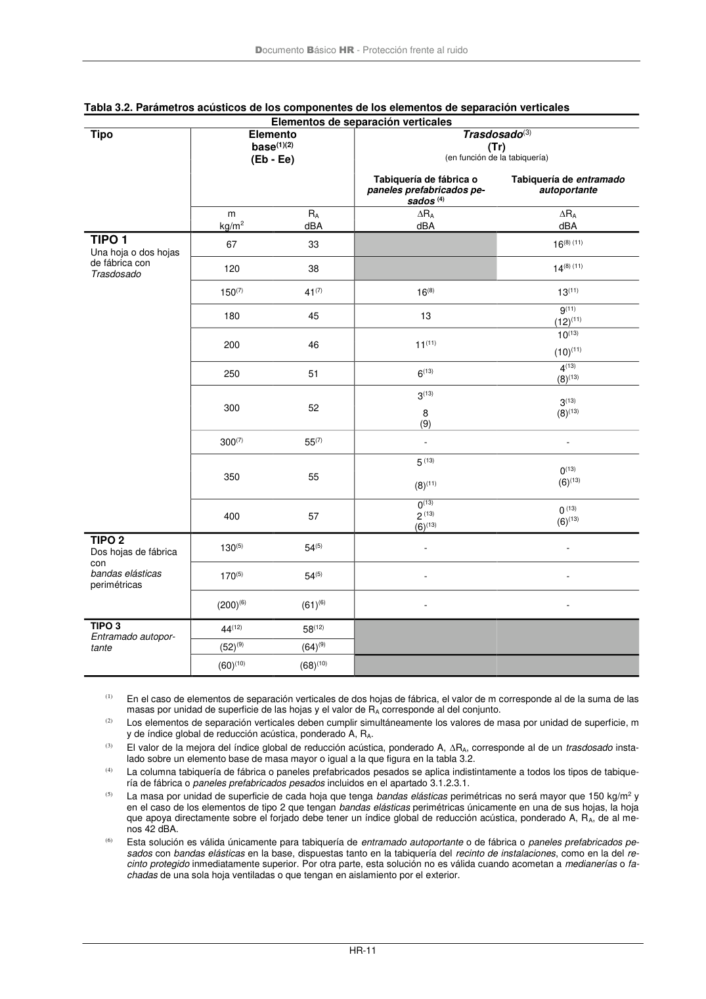

DB-HR · 3.1.2.3.4 Condiciones mínimas de los elementos de separación verticales · versión 2019-12-20 · capa oficial
Formatos: JSON compacto · Markdown · PDF fuente
Ámbito del documento · texto del ámbito · documento y tablas
ID técnico a0042 · PDF pág. 14-17 · jerarquía no validada por persona · contrastado con el literal de la página 14 (candidato tipográfico); no validado por persona · padre: raíz
3.1.2.3.4 Condiciones mínimas de los elementos de separación verticales 1 En la tabla 3.2 se expresan los valores mínimos que debe cumplir cada uno de los parámetros acústicos que definen los elementos de separación verticales.. De entre todos los valores de la ta- bla 3.2, aquéllos que figuran entre paréntesis son los valores que deben cumplir los elementos de separación verticales que delimitan un recinto de instalaciones o un recinto de actividad. Las casi- llas sombreadas se refieren a elementos constructivos inadecuados. Las casillas con guión se refie- ren a elementos de separación verticales que no necesitan trasdosados. 2 En el caso de elementos de separación verticales de tipo 1, el trasdosado debe aplicarse por ambas caras del elemento constructivo base. Si no fuera posible trasdosar por ambas caras y la transmi- sión de ruido se produjera principalmente a través del elemento de separación vertical, podrá tras- dosarse el elemento constructivo base solamente por una cara, incrementándose en 4 dBA la mejo- ra RA del trasdosado especificada en la tabla 3.2. 3 En el caso de que una unidad de uso no tuviera tabiquería interior, como por ejemplo un aula, pue- de elegirse cualquier elemento de separación vertical de la tabla 3.2. 4 De acuerdo con lo establecido en el apartado 2.1.1, las puertas que comunican un recinto protegido de una unidad de uso con cualquier otro del edificio que no sea recinto de instalaciones o de activi- dad, deben tener un índice global de reducción acústica, ponderado A, RA, no menor que 30 dBA y si comunican un recinto habitable de una unidad de uso en un edificio de uso residencial (público o privado) u hospitalario con cualquier otro del edificio que no sea recinto de instalaciones o de activi- Documento Básico HR - Protección frente al ruido HR-9 dad, su índice global de reducción acústica, ponderado A, RA no será menor que 20 dBA. Si las puertas comunican un recinto habitable con un recinto de instalaciones o de actividad, su índice global de reducción acústica, ponderado A, RA, no será menor que 30 dBA. 5 Con carácter general, los elementos de la tabla 3.2 son aplicables junto con forjados de masa por unidad de superficie, m, de al menos 300kg/m2. No obstante, pueden utilizarse con forjados de me- nor masa siempre que se cumplan las condiciones recogidas en las notas indicadas a pie de tabla para las diferentes soluciones. 6 En el caso de que un elemento de separación vertical acometa a un muro cortina, podrá utilizarse la tabla 3.2 asimilando la fachada a alguna de las contempladas en la tabla, en función del tipo especí- fico de unión entre el muro cortina y el elemento de separación vertical. 7 Con objeto de limitar las transmisiones indirectas por flancos, las fachadas o medianerías, a las que acometan cada uno de los diferentes tipos de elementos de separación verticales, deben cumplir las condiciones siguientes: a) Elementos de separación verticales de tipo1: i) para la fachada o medianería de una hoja o ventilada de fábrica o de hormigón debe cumplirse: − la masa por unidad de superficie, m, de la hoja de fábrica o de hormigón, debe ser al menos 135kg/m2; − el índice global de reducción acústica, ponderado A, RA, de la hoja de fábrica o de hormigón, debe ser al menos 42dBA. Esta fachada no puede utilizarse en el caso de recintos de instalaciones. ii) para la fachada o medianería pesada de dos hojas, no ventilada, la masa por unidad de superficie, m, de la hoja exterior debe ser al menos 130kg/m2; iii) para la fachada o medianería ventilada o ligera no ventilada, que tenga la hoja interior de entramado autoportante: − la masa por unidad de superficie, m, de la hoja interior deber ser al menos 26 kg/m2; − el índice global de reducción acústica, ponderado A, RA, de la hoja interior debe ser al menos 43dBA; En la tabla 3.2 no se contempla el caso de elementos de separación de tipo 1 y fachadas lige- ras no ventiladas con hoja interior de fábrica. Tampoco se contempla el caso de fachadas de dos hojas, con hoja interior de fábrica, de hor- migón o de paneles prefabricados pesados usados conjuntamente con tabiquería de entrama- do autoportante, ni el de fachadas de dos hojas con hoja interior de entramado autoportante usados conjuntamente con tabiquería de fábrica o de paneles prefabricados pesados. b) Elementos de separación verticales de tipo2: i) para la fachada o medianería de dos hojas pesada, no existen restricciones; ii) para la fachada o medianería de una sola hoja o ventiladas con la hoja interior de fábrica o de hormigón: − si la masa por unidad de superficie, m, del elemento de separación vertical es menor que 170 kg/m2, no está permitido que éstos acometan a este tipo de medianerías o fachadas; − si la masa por unidad de superficie, m, del elemento de separación vertical es mayor que 170 kg/m2, el índice global de reducción acústica, ponderado A, RA, de la medianería o la fachada a la que acometen debe ser al menos 50 dBA y su masa por unidad de superficie, m, al menos 225 kg/m2. En la tabla 3.2 no se contempla el caso de elementos de tipo 2 que acometan a fachadas de dos hojas, ventiladas o no, con hoja interior de entramado autoportante. Tampoco se contempla el caso de elementos de tipo 2 que acometan a fachadas ligeras de dos hojas. c) Elementos de separación verticales de tipo3: Documento Básico HR - Protección frente al ruido HR-10 i) para la fachada o medianería pesada de dos hojas, con hoja interior de entramado auto- portante: − la masa por unidad de superficie, m, de la hoja exterior deber ser al menos 145kg/m2; − el índice global de reducción acústica, ponderado A, RA, de la hoja exterior de- be ser al menos 45dBA. ii) para la fachada o medianería ventilada o ligera no ventilada, que tenga la hoja interior de entramado autoportante: − la masa por unidad de superficie, m, de la hoja interior deber ser al menos 26 kg/m2; − el índice global de reducción acústica, ponderado A, RA, de la hoja interior debe ser al menos 43dBA. En la tabla 3.2 no se contempla el caso de elementos de separación verticales de tipo3 que acometan a fachadas de una hoja o fachadas de dos hojas, ventiladas o no, con hoja interior de fábrica, hormigón o paneles prefabricados pesados. Independientemente de lo indicado en este apartado, las medianerías y las fachadas deben cumplir lo establecido en los apartados 3.1.2.4 y 3.1.2.5, respectivamente. Documento Básico HR - Protección frente al ruido HR-11 Tabla 3.2. Parámetros acústicos de los componentes de los elementos de separación verticales

PDF fuente redistribuible: copia fiel enlazada en esta página (SHA256 verificado).